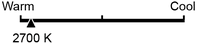

The Major Bulb Standards
Standard Incandescent
Incandescent bulbs give off the warm, yellowish-white light we’ve grown to love, but they are highly inefficient, losing 90 percent of their energy to heat. You can still find traditional incandescent bulbs on store shelves, but major manufacturers have stopped producing the most common varieties — meaning that 40-, 60-, 75- and 100-watt bulbs will become scarcer in the coming months. Production of specialty incandescents like three-way bulbs will continue.
Halogen Incandescent
Contrary to some reports, incandescent bulbs have not been banned. In response to a 2007 law setting higher efficiency standards, manufacturers added halogen gas to incandescent bulbs to make them burn more efficiently. Halogen incandescents give off the same light as traditional incandescents, but use 28 percent less energy. Like standard incandescents, they last about one year.
CFL
Compact fluorescents — CFLs — have come a long way since becoming widely available in the 1990s. Today, the color of the light is much improved, some bulbs can be dimmed, and the price per bulb has dropped dramatically to a few dollars or less. They use about 75 percent less energy than incandescents and have an estimated life of nine years. CFLs contain very small amounts of mercury and should be disposed of properly.
LED
Currently, LEDs make up less than 1 percent of the domestic market. But with prices dropping rapidly, adoption rates are expected to soar. LEDs use about 80 percent less energy than incandescents and have an estimated life of more than 20 years. Most LEDs can be dimmed. So far, cost has been the biggest obstacle to wider use; while 60-watt equivalent LED bulbs are now selling for less than $10, the price for higher-wattage equivalents is at least twice that.
A 60-Watt Comparison
We went to Home Depot to shop for bulbs equivalent to the common 60-watt “soft white” standard incandescent bulb. (Prices as of January 2014. Note: Bulb prices vary greatly within a given category, depending on the manufacturer and features such as dimmability and color temperature. This is a sample of what we found.)
Standard Incandescent

Philips Soft White 60-Watt Bulb (four-pack)
- Cost $1.58 ($0.40/bulb)
- Brightness 860 lumens
- Life 0.9 years
- Light appearance 2770K
- Energy used 60 watts
- Estimated yearly energy cost1 $7.23
-
Total cost per year2
[chart: costs over a 10-yr period] - Cost over 10 years $76.70
Halogen Incandescent

Philips EcoVantage 43-Watt (60-Watt equivalent) Soft White Dimmable Light Bulb (four-pack)
- Cost $5.97 ($1.49/bulb)
- Brightness 750 lumens
- Life 0.9 years
- Light appearance 2920K
- Energy used 43 watts
- Estimated yearly energy cost1 $5.18
-
Total cost per year2
[chart: costs over a 10-yr period] - Cost over 10 years $68.19
CFL

EcoSmart 60-Watt Equivalent Soft White Dimmable CFL, Instant On (two-pack)
- Cost $5.97 ($2.99/bulb)
- Brightness 850 lumens
- Life 9.1 years
- Light appearance 2700K
- Energy used 14 watts
- Estimated yearly energy cost1 $1.69
-
Total cost per year2
[chart: costs over a 10-yr period] - Cost over 10 years $22.88
LED

Cree 60-Watt Equivalent Soft White Dimmable LED Light Bulb
- Cost $4.973
- Brightness 800 lumens
- Life 22.8 years
- Light appearance 2700K
- Energy used 9.5 watts
- Estimated yearly energy cost1 $1.14
-
Total cost per year2
[chart: costs over a 10-yr period] - Cost over 10 years $16.37
What Are These Terms?
Brightness
Consumers are accustomed to thinking about bulb brightness in terms of watts, a measure of how much energy a bulb uses. Now, the lighting industry and energy-efficiency community would like us to shift our thinking to “lumens,” a measure of how much light a bulb actually gives off.
Approximate incandescent equivalents:
- 60-watt: 800 lumens
- 75-watt: 1,100 lumens
- 100-watt: 1,600 lumens
Life
The life of a bulb as stated on a package assumes three hours of use per day. Keep in mind, this number is an estimate, based on simulations performed in labs. Some bulbs will not last as long as promised and others will last longer, but most major manufacturers offer a warranty on energy-efficient light bulbs, some as long as five or 10 years. Experts urge consumers to choose bulbs with the EPA’s Energy Star rating. These bulbs have gone through verification testing.
Light Appearance
 The “Light Appearance” number found on light bulb packaging refers to something called correlated color temperature, or CCT, measured in degrees Kelvin. This number offers a sense of how “warm” or “cool” a light looks. The yellowish glow of incandescent bulbs, often called “soft white” on packaging, is considered warm light and comes in at 2700K. Your old fluorescent tubes in your basement give off a much cooler, bluish light and could measure 5000K or above.
Separately, some light bulb packages include another measurement called the color rendering index, or CRI. This number is meant to give some sense of how accurately a light source displays colors. Traditional incandescent bulbs have a CRI of close to 100. For CFLs and LEDs, the EPA requires bulbs to have a CRI of 80 or higher to qualify for the Energy Star label.
All these numbers aside, lighting experts say the best thing to do is to try a few options at home before committing to changing all your bulbs.
Energy Used
This number represents how much electricity a light bulb consumes, measured in watts. CFLs and LEDs use far fewer watts to produce the same amount of light as incandescents. A 60-watt equivalent CFL bulb may use only 13 watts, whereas an LED may use only 10 watts.